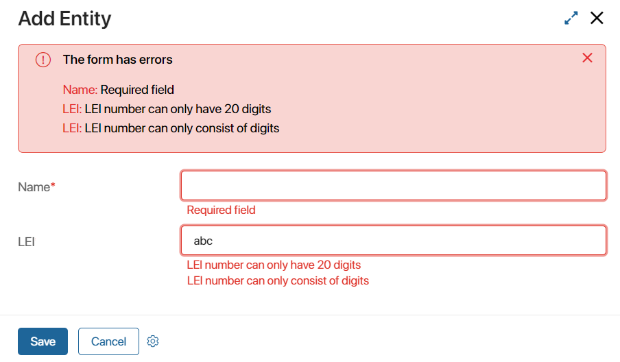

Client scripts in widgets support functions that are called automatically when displaying a widget or saving the form. Here is a list of system functions:
- The initialization function. This function is called as the widget is initialized, before the interface template is displayed.
- The function checking the widget’s display settings. This function is called after the initialization function. It returns
trueif the widget should be displayed andfalseif it shouldn’t. - The rendering completion function. This function is called after the widget template is fully rendered in the browser. If the Load the contents asynchronously option is enabled in the widget settings, the function is called upon the completion of rendering the widget itself, but before its content is rendered.
- The destroy function. This function is called in order to end the widget’s work and free system resources from the data associated with its operation.
- The validation function. This function is called when the user tries to save the form. It checks whether the form’s fields are filled out correctly.
These functions are optional. You can use them in the scripts and select them on the Settings tab in the interface designer.
By default, the following functions are called if they are defined in the script:
onInit()is called upon the widget’s initialization.canRender()is called when conditions for displaying the widget are checked.onLoad()is called when the widget’s rendering is completed.destroy()is called when the widget’s work ends.
There is no default validation function.
onInit()
By the time the execution of the function starts, the input data is loaded to the widget’s context, Context.data.*. You can add whatever data is missing to the function’s body, and it will be used to manage the way the widget is displayed or to execute custom functions. Also, in the function’s body you can call API methods or server functions.
async function onInit (): Promise<void> {
// Function's body
}
Example
Let’s say you need to create a widget that will show a table displaying full names of users alongside with their dates of birth.
Add the users variable of the Table type to the widget, as well as two String type variables that the table will include: name and birthDate.
Place the users variable on the modeling canvas. In the client script, write the onInit() function:
async function onInit (): Promise<void> {
const users = await System.users.search().size(100).sort('__name', true).all();
for (const user of users) {
let item = Context.data.users!.insert();
item.name = user.data.__name;
item.birthDate = user.data.birthDate ? user.data.birthDate.format('L') : '';
}
Context.data.users = Context.data.users;
}
canRender()
Use this function when you need to display a widget template only when a certain condition is met, for example, when certain input data is filled out in the context.
async function canRender (): Promise<boolean> {
// Function's body (must return true/false)
}
The canRender() function is different from the Hide system field. If the value of the Hide field evaluates to true, the widget template is still rendered, but it’s not visible to users because it is marked as hidden in the web element’s styles. When the canRender() function returns false, the template isn’t rendered at all. This can be important, for instance, when you create complex widgets with required fields. In this case an error can occur if certain fields on a hidden template are left empty.
Example
Let’s say you need to create a widget to display a brief overview of each item of the Contracts app.
Create two variables: one with the code date, of the Date type, and one with the code number, of the Number type. As an input parameter, specify the variable storing a Document type app. In our case, it will be used to store an item of the Contracts app.
This widget will be reused in different business processes and on forms of different apps that have a Document type app in the context. Another condition is that the widget’s template should not be displayed if the input field is empty.
To make this possible, add an input variable with the code app storing a Document app. Also, create additional date and number variables. Their types must match the corresponding fields in the Contracts app. Uncheck the Input and Output boxes for these variables.
Place the date and number variables on the form and mark them as Read only. To make the widget stand out on the page, add a border to it. To do that, go to the HTML styles field and enter the following:
border: 1px solid gray;
In the client script, write the onInit() and canRender() functions:
async function onInit (): Promise<void> {
if (!await canRender()) {
return;
}
const appItem = await Context.data.app!.fetch();
Context.data.date = appItem.date;
Context.data.number = appItem.number;
}
async function canRender (): Promise<boolean> {
return !!Context.data.app; // Returns true if the app field is filled in
}
After you publish the script, you can place the widget on the form of any other app that has a variable for a Document type app and map this variable with the input field of the widget.
Now, the widget will be displayed on pages of items that have this field filled out. If the field is empty, nothing will be shown, neither the border nor the hidden web elements of the widget.
Destroy function
You can end the widget’s work using the destroy function The widget will stop performing its functionality, and the data created during its operation will be cleared.
async function destroy(): Promise<void> {
// Function body
}
Example
For example, a page contains a report that displays data from different apps. A script for automatic refreshing for a certain period of time is configured for the report. When the user closes the page, the countdown to refresh continues and the data from apps is requested. If the user re-visits the page, a new time count starts, which causes an error on the server.
To avoid errors and prevent the system from overloading, you can apply the destroy function to the widget. Then when the page is closed, the time counting will stop and the data will not be updated.
Let’s write the destroy() function in the the widget client scripts:
async function onInit(): Promise<void> {
// await refresh();
setIntervalRefresh();
}
let intervalID: number;
declare const window: {
setInterval: (fn: () => void, interval: number) => number;
clearInterval: (clearInterval: number) => void;
};
async function setIntervalRefresh () {
intervalID = window.setInterval(() => {
refresh();
}, 3000);
}
async function destroy(): Promise<void> {
window.clearInterval(intervalID);
}
Custom validation function
You can create a function that will check whether a form is filled out correctly. In this function, you can add the necessary checks that you want to apply along with the existing standard ones when a user attempts to save the form. For example, you can set validation for field values.
To apply the function, select it in the Validation field on the Settings tab in the interface designer.
Information about validation errors will be displayed under the fields with invalid information. Moreover, a list or all errors will be displayed at the top of the form. If at least one error is found during standard or custom validation, it is impossible to save the form.
If several custom widgets with a validation function are placed on one form, the validation result will be checked for each function.

When describing the validation function, you can create additional checks for fields, customize error display, and manage the validation of hidden form fields. See more in the Set up custom validation article.
Found a typo? Select it and press Ctrl+Enter to send us feedback